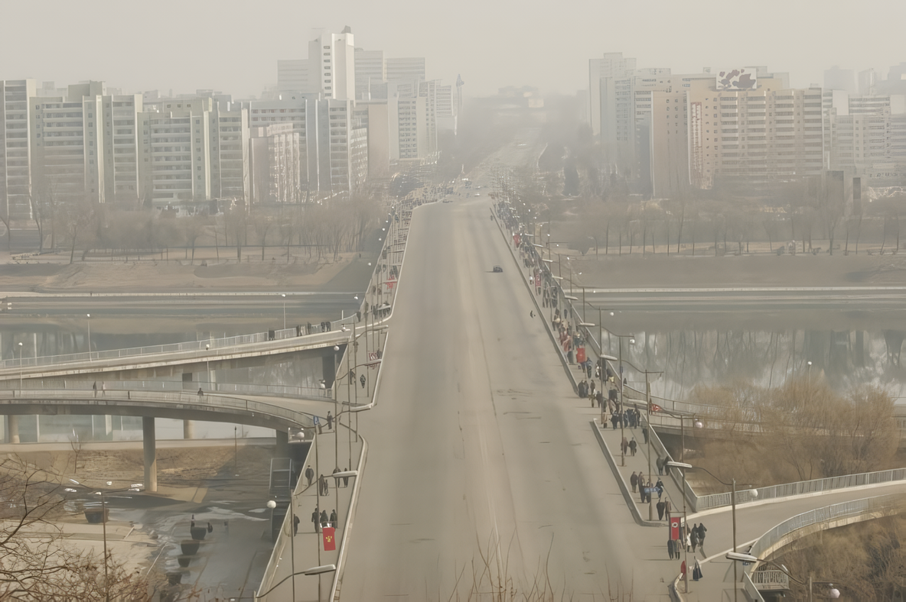
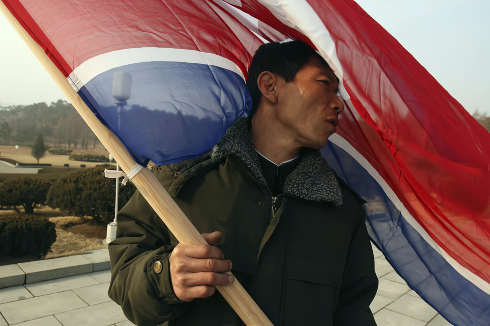
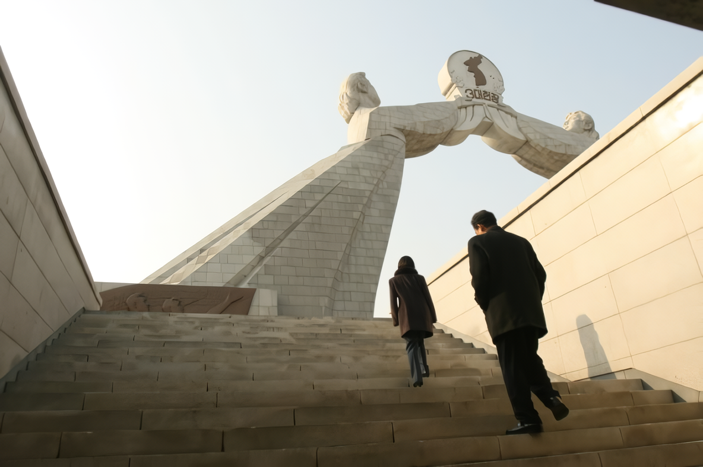
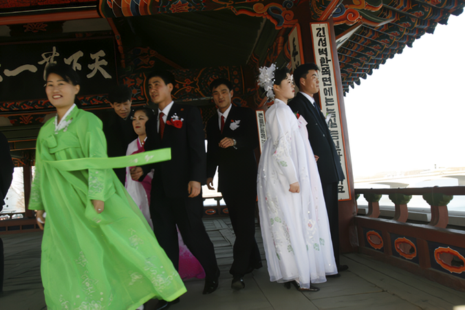

Inside North Korea
송미아 포토스토리
2007_1114 ▶ 2007_1130 / 일요일 휴관

초대일시_2007_1114_수요일_05:00pm
작가와의 대화_2007_1114_수요일_05:00pm~ 송미아의 북쪽사람 이야기
관람시간 / 11:00am~07:00pm / 일요일 휴관
보충대리공간 스톤앤워터_도마뱀극장
경기도 안양시 만안구 석수2동 286-15번지
Tel. 031_472_2886
www.stonenwater.org
갖은 우여곡절 끝에 가게된 평양이었다. 2006년 10월 북한의 핵개발 소식을 접하고 내가 다니는 신문사에 북한 취재를 건의했을 때에만 해도 실제로 내가 북한에 가게 되리라는 확신은 없었다. 중국 심양공항에서 고려항공라는 글자가 선명히 찍힌 북한 민항기에 탑승하는 순간에서야 비로소 평양으로 가고 있다는 실감이 나면서 가슴이 벅차왔다. 반세기 넘게 단절되어 살아온 그곳으로 가는 과정은 만만치 않았다. 약 5개월 동안 관계자들을 만나 도움을 청하고, 비자를 신청하고, 북한에 편지를 보내 설득하는 과정을 거치면서 나에겐 어떤 절실한 사명감 같은 것이 싹트고 있었다. ● 부시 정권은 북한을 악의 축으로 규정했고 서방의 언론들은 앞을 다투어 북한을 자국민들이 굶어 죽는 것도 개의치 않고 오로지 군사력에만 힘을 모아 세계의 평화를 위협하는 나라로 묘사해 왔다. 그것이 사람들이 아는 북한의 전부라고 해도 과언은 아닐 것이다. 하지만 과연 그것이 전부일까? 직접 내 눈으로 확인해 보고 싶었다. 그리고 사람들에게 북한의 참 모습을 알리고 싶었다. 저널리스트로서, 또 동포의 한 사람으로서 그것은 나의 사명이자 의무로 다가왔다.

내가 본 평양의 첫인상은 한 나라의 수도라고 생각할 수 없을 만큼 너무나 소박했다. 간절한 기다림 끝에 분단된 조국의 반쪽을 찾아왔다는 기쁨도 잠시, 오래 전 시간이 멈춰버린 듯한 평양 시내에 들어서면서 나는 당혹감을 감출 수가 없었다. 어둠 속에서 희미하게 모습을 드러낸 건물들의 특이한 구조도 그랬지만 도시 전체를 감싸고 있던 적막한 고요 또한 무척 낯설었다. 너무 오랜 세월을 떨어져 살아온 것일까? 평양시내 곳곳에서 볼 수 있는 체재를 찬양하는 구호와 거대한 모습으로 우뚝 서있는 기념비들을 돌아보며 사상과 이념의 차이를 피부로 느끼기도 했다. 반면, 이른 아침 햇살을 받으며 유유히 흐르던 대동강이나 아침 출근길을 서두르는 사람들의 분주한 모습을 보며 내가 서울 어느 대로에 서있나 하는 착각을 일으키기도 했다. 묘향산의 보현사처럼 잘 보존된 문화 유산을 둘러 보고 1000여명이 넘게 참여하는 대규모의 공연을 보면서 그동안 왜곡되어왔던 북한의 모습과 기상을 새로이 배울 수 있었고, 또 에너지난으로 인해 가로등 하나 없는 컴컴한 평양의 밤거리를 거닐며 북한 사람들이 직면한 삶의 현실을 엿보는 기회를 갖기도 했다. 어디든 나와 동행했던 안내 선생의 배려로 평양 시내에서는 비교적 자유롭게 사진 촬영을 할 수 있었지만 그 외의 지역에서는 내가 보고 느낀 만큼 마음껏 카메라에 담지 못한 것이 큰 아쉬움이다. 짧은 기간이었지만 평양에서 가장 인상에 남은 것은 단연 내가 평양에서 만난 사람들이었다. 노래를 부르며 생일 축하 파티를 하던 젊은이들, 모란봉 공원에서 데이트를 즐기던 남녀, 대동강변에 산책을 나오신 할아버지, 소풍을 즐기던 가족들, 배드민턴을 치던 학생들, 결혼식을 막 마친 신랑 신부, 호기심 많던 장난꾸러기 꼬마들까지.스치듯 만나 이야기 몇 마디 나누었을 뿐이지만 그들의 순박하고 소탈한 모습은 마치 오래 전부터 알고 지낸 사이 같은 친근함마저 느끼게 했다. 물론 내가 본 것이 북한 사회의 전부라고 할 수는 없겠지만 적어도 그곳에 평범한 삶의 희노애락이 있고, 또 오랜 세월을 떨어져 살아왔어도 그들은 우리와 같은 역사와 문화를 가진 우리의 반쪽이라는 것을 확인한 것만으로도 나의 북한방문은 큰 의미가 있는 것이었다. ● 북한 프로젝트를 갤러리에 전시하게 되었다. 저널리즘을 갤러리에서 보여주게 된 것이다. 본래 이 프로젝트는 내가 다니는 신문사에서 발행하는 신문에 실을 요량으로 편집한 디자인이었지만 북한에 대한 관점의 차이로 인해 신문에 싣지 못했었다. 그동안 신문을 위한 사진을 찍어온 나에게 갤러리라는 공간은 다소 생소하지만 이렇게 새로운 공간에서나마 북한의 이야기를 사람들에게 전달할 수 있어 다행스럽게 생각한다.
■ 송미아

송미아는 포토 저널리스트이다. 그녀가 근무하는 The Star-Ledger는 미국 뉴저지주에서 가장 큰 신문사로 약 60만부가 발행되고 미국 발행부수 순위 15위를 차지한다. 이 신문은 48면으로 구성되는데 편집국 기자들만 400명 정도이고 사진부는 사진 기자 25명, 사진 에디터 12명, 그외 기술자들 8명으로 구성되어 있다. 얼마전 '화재 이후에'라는 제목의 프로젝트를 연재하여 퓰리쳐상 피쳐사진 부문 수상자가 된 맷 레이니(Matt Rainey)가 근무하는 곳이기도 하다. 정기적인 것은 아니지만 일요일 신문에 스페셜 섹션으로 피쳐스토리나 스페셜 프로젝트가 실리기도 하는데 송미아의 북한 프로젝트는 6지면을 할애해서 한꺼번에 나가기로 했던 것이다.

북한 프로젝트를 위해서 올해 초 송미아는 사비를 털어서 북한을 다녀왔다. 남쪽에서 태어난 저널리스트 송미아의 눈에 비친 북쪽은 어떤 모습이었을까? 북한에서 송미아가 촬영한 사진들이 선데이판 포토스토리로 기획되어 편집을 마치고 발행을 하루 앞둔 시점, 그녀는 돌연 신문 발행을 거부했다고 한다. 왜일까? 송미아는 자신의 사진에 덧붙여진 거짓 텍스트를 거부했다. 맷 레이니의 말대로 포토스토리를 만드는 저널리스트가 고수해야 하는 '견해와 해석'이 사라지고 데스크의 편협한 시각으로 자신의 사진이 각색되어 미국 시민사회에 유포되는 것을 반대한 것이다. ● 저널리스트인 그녀의 전시를 스톤앤워터에서 하게된 것은 우연이 아니다. 스톤앤워터는 2007년 5월 18일을 전후하여 네팔의 저널리스트인 디펜드라 바즈라차르야가 촬영한 네팔의 민주항쟁 사진과 영상을 전시한바 있다.(스톤앤워터 도마뱀극장 개관기념 초대전 EVIDENCE 2007.5.12-5.24) 우리는 진정한 의미의 저널리스트 송미아를 통해 조금 더 확장된 시야를 갖게 되길 원하고 이것이 두번째로 사진전을 기획하게 된 배경이자 이유이다. 이제 곧 미국에서 활동중인 저널리스트 송미아의 포토스토리 Inside North Korea를 스톤앤워터가 발행한 따끈따끈한 신문과 사진, 그리고 영상을 통해 보고 듣게될 것이다.
■ 박찬응